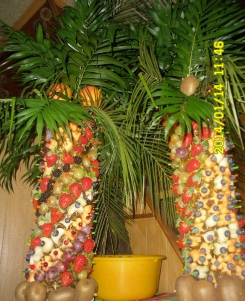

vaisius - Vikižodynas
2020.10.29 08:40
vaisius
Puslapis iš Vikižodyno, laisvojo žodyno. Jump to navigation Jump to searchTurinys
1 Lietuvių kalba 1.1 Daiktavardis 1.1.1 Etimologija 1.1.2 Išraiškos arba posakiai 1.1.3 VertimaiLietuvių kalba [ taisyti ]
Daiktavardis [ taisyti ]
vaĩsius ( dkt. , vyr. g. , pagr. f. ) Daiktavardis Pagrindinė forma : vaĩsius vienaskaita daugiskaita vard. vaisius vaisiai kilm. vaisiaus vaisių naud. vaisiui vaisiams gal. vaisių vaisius įnag. vaisiumi vaisiais viet. vaisiuje vaisiuose šauksm. vaisiau vaisiai Skiemenys : vai-sius vaisius : iš vaismedžių ir vaiskrūmių užsimezgusio žiedo išaugęs sultingas valgomas audinys su kauliuku ar sėklomis viduje ar į jį panašus ( Botanika ) - iš gaubtasėklių žiedo išaugęs sėklas gaubiantis audinys ( Embriologija ) - gemalas nuo placentos susidarymo iki gimimo ( prk. ) padarinys , rezultatas Pastangos davė vaisių.Etimologija [ taisyti ]
Žodžio kilmė nežinoma. Jeigu žinote žodžio etimologiją, maloniai kviečiame ją parašyti čia . Instrukcijas, kaip nurodyti etimologijas rasite čia . Giminingas žodžiui veistis . Sąsajos su žodžiu vaistas neaiškios.
Išraiškos arba posakiai [ taisyti ]
vaisius : Kilę žodžiai bevaisis (lt) , bevaisė (lt) vaisingas (lt) , vaisinga (lt) vaiskrūmis (lt) vaislus (lt) , vaisli (lt) vaismedis (lt) vaisti (lt) vaisus (lt) vaisvandeniai (lt)Vertimai [ taisyti ]
vaisius : sultingas valgomas audinys Afrikanų kalba : vrug (af) , vrugte (af) Aimarų kalba : achu (ay) ainų kalba : nurodykite žodžio vaisius vertimą(-us) (Ainų kalba), žr. Airių kalba : toradh (ga) , meas (ga) ( vyr. g. ) Albanų kalba : fruti (sq) ( vyr. g. ) Alviri-Vidari: میوه (avd) (mive) Amharų kalba : ፍራፍሬ (am) (fərafəre) Anglų kalba : fruit (en) Arabų kalba : فَاكْهَة (ar) ( mot. g. ) (fāk-ha) Armėnų kalba : պտուղ (hy) (ptuġ), ( paprastai medžių ) միրգ (hy) (mirg), ( medžių ) բար (hy) (bar) Arumunų kalba : fructu (rup) , frut (rup) , poamã (rup) ( mot. g. ), carpo (rup) Astūrų kalba : frutu (ast) ( vyr. g. ) atonių kalba : fua' (aoz) Azerbaidžaniečių kalba : meyvə (az) Baltarusių kalba : садавіна (be) ( mot. g. ) (sadavína), плод (be) ( vyr. g. ) (plod) Bengalų kalba : ফল (bn) (phal), ফল (bn) (phal) Bretonų kalba : frouezh (br) Bulgarų kalba : плод (bg) ( vyr. g. ) (plod), овошка (bg) ( mot. g. ) (ovóška) čiačia kalba : nurodykite žodžio vaisius vertimą(-us) (Čiačia kalba), žr. Čamikurų kalba : sokajki (ccc) Čekų kalba : ovoce (cs) ( bev. g. ), plod (cs) ( vyr. g. ) Danų kalba : frugt (da) ( bendr. g. ) Žemutinių sorbų kalba : Lower Sorbian: płod (dsb) ( vyr. g. ) Esperanto : frukto (eo) Estų kalba : puuvili (et) evų kalba : kutsetse (ee) ( bev. g. ) Fryzų kalba : frucht (fy) furilų kalba : pome (fur) , frut (fur) Galisų kalba : froita (gl) ( mot. g. ) Graikų kalba : καρπός (el) ( vyr. g. ) (karpós), οπώρα (el) ( mot. g. ) (opóra), οπωρικό (el) ( bev. g. ) (oporikó), φρούτο (el) ( bev. g. ) (frúto) Kartvelų kalba : ხილი (ka) (xili) ( prk. ), ნაყოფი (ka) (naq‘op‘i) Gudžaratų kalba : ફળ (gu) Gvaranių kalba : yva (gn) Haičio kreolų kalba : fwi (ht) , fwi (ht) , fwi (ht) Hebrajų kalba : פרי (he) ( vyr. g. ) (perí), פירות (he) ( vyr. g. ) (peyrót) ( collective ) Hindi : फल (hi) ( vyr. g. ) (phal) Ido : frukto (io) ilokanų kalba : bunga (ilo) Indoneziečių kalba : buah (id) Interlingua : fructo (ia) Islandų kalba : ávöxtur (is) ( vyr. g. ), aldin (is) ( bev. g. ) Ispanų kalba : fruta (es) ( mot. g. ), fruto (es) ( vyr. g. ) Italų kalba : frutta (it) ( mot. g. ), frutto (it) ( vyr. g. ) Japonų kalba : 果実 (ja) (かじつ, kajitsu), 果物 (ja) (くだもの, kudámono), フルーツ (ja) (furūtsu) Jidiš : פֿרוכט (yi) ( bev. g. ) (frukht), אויפּס (yi) ( bev. g. ) (oyps) Katalonų kalba : fruit (ca) ( vyr. g. ) kcho kalba : ǀnàn (nmn) Kinų kalba : Kinų mandarinų kalba : 水果 (cmn) (shuǐguǒ), 果子 (cmn) (guǒzi) Korėjiečių kalba : 과일 (ko) (gwail) kunigamių kalba : ナイムン (xug) (na'i↑muN) Kurdų kalba : Sorani: fêkî (ku) ( vyr. g. ), mêwe (ku) ( mot. g. ), میوه (ku) lakotų kalba : waskuyeca (lkt) Latvių kalba : auglis (lv) Lenkų kalba : owoc (pl) ( vyr. g. ) Lojban : grute (jbo) Lotynų kalba : fructus (la) ( vyr. g. ), frux (la) ( mot. g. ), fruges (la) ( prk. ) Makedonų kalba : плод (mk) ( vyr. g. ) , овошје (mk) ( bev. g. ) (óvošje), овошка (mk) ( mot. g. ) (óvoška) Malajalių kalba : പഴം (ml) (pazham), ഫലം (ml) (phalam) Malajų kalba : buah (ms) Maorių kalba : hua (mi) Marathų kalba : फळ (mr) (phala) Menksiečių kalba : mess (gv) Mjanmų kalba : အသီး (my) (ăthi:), သစ်သီး (my) (thitthi:) Mongolų kalba : үр (mn) (ür) Nepalų kalba : फल (ne) Norvegų kalba : frukt (no) ( vyr. g. ) odžibvės kalba : miiniwin (oj) , miiniwinan (oj) ( prk. ) okinavų kalba : ないむん (ryu) (naimun) Oksitanų kalba : frut (oc) Nyderlandų kalba : fruit (nl) ( bev. g. ), vrucht (nl) ( mot. g. ) Persų kalba : میوه (fa) (mive) Pietų minų kalba : 水果 (nan) ( chúi-kó (nan) ); 果子 (nan) ( kóe-chí (nan) or ké-chí (nan) ) Portugalų kalba : fruta (pt) ( collective ) ( mot. g. ), fruto (pt) ( vyr. g. ) Romanijos kalba : fròtta (rgn) ( mot. g. ) Prancūzų kalba : fruit (fr) ( vyr. g. ) Retoromanų kalba : fritg (rm) , fretg (rm) , früt (rm) Rumunų kalba : fruct (ro) ( bev. g. ), poamă (ro) ( mot. g. ), rod (ro) ( bev. g. ) Rusų kalba : плод (ru) ( vyr. g. ) (plod), фрукт (ru) ( vyr. g. ) (frukt) Sanskritas : फल (sa) (phála) Sardiniečių kalba : frutu (sc) Senoji anglų kalba : ofett (ang) ( bev. g. ) Senovės graikų kalba : καρπός (grc) ( vyr. g. ) (karpos) Serbų-kroatų kalba : Kirilica: воћкa (sh) ( mot. g. ), пло̑д (sh) ( vyr. g. ) Lotyniškai: voćka (sh) ( mot. g. ), plȏd (sh) ( vyr. g. ) Siciliečių kalba : fruttu (scn) ( vyr. g. ) Slovakų kalba : ovocie (sk) ( bev. g. ) Slovėnų kalba : sadež (sl) ( vyr. g. ), plod (sl) ( vyr. g. ) Suomių kalba : hedelmä (fi) Suahilių kalba : tunda (sw) , matunda (sw) ( prk. ) Škotų gėlų kalba : meas (gd) ( vyr. g. ), toradh (gd) ( vyr. g. ) Švedų kalba : frukt (sv) ( bendr. g. ) Tadžikų kalba : мева (tg) (meva) Talysh: Asalemi: میوه (tly) (miva) Tagalų kalba : bunga (tl) Tajų kalba : ลูก (th) (lôok), ผล (th) (pŏn), ผลไม้ (th) (pŏnlámáai) Tamilų kalba : பழம் (ta) (palam) Telugų kalba : పండు (te) (paMDu), ఫలము (te) (phalamu) Tetum kalba : ai-fuan (tet) Tibetiečių kalba : ཤིང་ཏོག (bo) (shing tog) Tongiečių kalba : fua (to) Turkmėnų kalba : iymis (tk) , miwe (tk) Turkų kalba : meyve (tr) Tuvių kalba : чимис (tyv) (čimis), фрукт (tyv) (frukt) Ukrainiečių kalba : плід (uk) ( vyr. g. ) (plid), фрукт (uk) ( vyr. g. ) (frukt) Urdu : پھل (ur) ( vyr. g. ) (phal) Uzbekų kalba : meva (uz) , mevali (uz) Valų kalba : ffrwyth (cy) ( vyr. g. ) Vengrų kalba : gyümölcs (hu) vidurinioji anglų kalba : ovet (enm) Vietnamiečių kalba : quả (vi) , trái cây (vi) ( bendrai ) Vokiečių kalba : Frucht (de) ( mot. g. ) Valonų kalba : frut (wa) ( vyr. g. ) Zulų kalba : isithelo (zu) Aragoniečių kalba : fruito (an) ( vyr. g. ) Rusinų kalba : плод (rue) ( vyr. g. ) (plod) Žemaičių kalba : vaisios (sgs) ( vyr. g. ) vaisius : ( Botanika ) Anglų kalba : fruit (en) vaisius : ( Embriologija ) Anglų kalba : foetus (en) vaisius : rezultatas Gauta iš „ https://lt.wiktionary.org/w/index.php?title=vaisius&oldid=1773321 “ Kategorijos : Lietuvių kalba Lietuvių kalbos daiktavardžiai Botanika/Lietuvių kalba Embriologija/Lietuvių kalba Paslėptos kategorijos: Nesutvarkyti - žodžiai su nenurodyta kirčiuote Lietuvių kalbos žodžiai su nenurodyta kilme Nurodykite vertimą/Ainų kalba Nurodykite vertimą/Čiačia kalba Pateikite tarimą/Makedonų kalbaNaršymo meniu
Asmeniniai įrankiai
Neprisijungęs Aptarimas Indėlis Sukurti paskyrą PrisijungtiVardų sritys
Straipsnis AptarimasVariantai
Peržiūros
Skaityti Keisti IstorijaMore
Paieška
Naršymas
Pagrindinis puslapis Bendruomenė Naujausi keitimai Naujienos Atsitiktinis straipsnis Pagalba ParamaĮrankiai
Susiję straipsniai Susiję keitimai Įkelti failą Specialieji puslapiai Nuolatinė nuoroda Puslapio informacija Cituoti šį puslapįPrisidėkite
Reikalingi žodžiai Geidžiamiausi puslapiai Išverskite Patikrinkite Patikrinkite vertimą Nurodykite tarimąSąrašai
Pradžia Kalbų sąrašas Kalbų kodų lentelėSpausdinti/eksportuoti
Kurti knygą Parsisiųsti kaip PDF Versija spausdinimuiKitomis kalbomis
ᏣᎳᎩ Deutsch English Français Magyar Íslenska Italiano 日本語 Kurdî Limburgs ລາວ Norsk Polski Português Gagana Samoa Shqip Türkçe Šis puslapis paskutinį kartą keistas 1 spalio 2020 08:56. Turinys pateikiamas pagal Creative Commons Attribution-ShareAlike licenciją ; gali būti taikomos papildomos sąlygos. Norėdami sužinoti daugiau, žiūrėkite Naudojimo sąlygas . Privatumo politika Apie Vikižodyną Jokių Garantijų Mobili peržiūra Kūrėjai Statistika Slapukų politika- SEGEBUTĖS UŽRAŠAI: Pitaja arba "Drakono vaisius"
- Sodo gėrybės - Sujunk 3 vaisius
- vaisius - Vikižodynas - Wiktionary
- Daržovės ir vaisiai - BARBORA
- Džiovinti vaisiai | Džiovintos uogos | Riešutai Jums
- Drakono vaisius arba Kertuotis – Tailando vaisius ...
- Egzotiniai vaisiai ir daržovės | MAXIMA | MAXIMA
- Durianas – Tailando vaisių karalius, smirdantis vaisius ...
- VAISIAUS ŽŪTIS
- vaisiai - išsamiai DELFI.lt
- SEGEBUTĖS UŽRAŠAI: Pitaja arba "Drakono vaisius"
„Misija – švari vasara“ skaičiuoja darbo vaisius . www.alkas.lt 2020 09 24 11:04 „Misija – švari vasara“ skaičiuoja rezultatus | lrv.lt nuotr. Vasaros pradžioje Valstybinė saugomų teritorijų tarnyba prisijungė prie pakuočių tvarkymo sumanymo „Misija – švari vasara“. Kadangi buvo pastebėta, jog paskelbus karantiną ...
- Sodo gėrybės - Sujunk 3 vaisius
Paspaudus vaisius turi būti labai minkštas, o žievė itin lengvai luptis. Jei sukate galvą, ką pagaminti iš avokado. Štai jums kelios idėjos. Vištienos salotos su mangais ir avokadais. Itin ...
- vaisius - Vikižodynas - Wiktionary
Geriausia apsaugoti džiovintus vaisius nuo tiesioginių saulės spindulių ir laikyti juos tamsioje vietoje. Jei šaldytuve nėra pakankamai vietos džiovintiems vaisiams laikyti, galite juos įdėti į viršutinę virtuvės stalčių lentyną, kur dažnai nežiūrite. Atkreipkite dėmesį, kad kambaryje neturėtų būti didelė drėgmė.
- Daržovės ir vaisiai - BARBORA
Durianas – Tailando vaisius, tajų kalba vadinamas Tu-Rian.Tai didžiulis vaisius, pasižymintis specifiniu kvapu, todėl tikrai pastebėsite ir užuosite durianus pardavinėjamus ne tik Bankoko gatvėse ar turguose, bet ir praktiškai visur Tailande.
- Džiovinti vaisiai | Džiovintos uogos | Riešutai Jums
Saldžiarūgščius vaisius saugojo piktos ir nuodingos širšės. Žiemos pradžia Lapkritis - rugsėjo anūkas, o spalio - sūnus. Jis dar ne žiema. Tai paskutinis rudens mėnuo. Piktų šalnų ir žvarbumo pradžia. Nematoma šalčio giltinė nuvirina pievas, laukus, paežeres. Nupurto spalio auksą beržynuose, užgesina raudonų klevų ...
- Drakono vaisius arba Kertuotis – Tailando vaisius ...
Deja, visas bergamotės gėris yra odelėje, pats vaisius yra rūgštus ir maistui nenaudojamas. Nedideli bergamočių medeliai dyglių auga Italijoje, Bergamo regione, žydi balandį smulkiais baltais ir salsvai kvepiančiais žiedais. Vaisiai panašūs į citrinas ir sveria apie 200 g. Jos prinoksta ir skinamos žiemą bei ankstyvą pavasarį ...
- Egzotiniai vaisiai ir daržovės | MAXIMA | MAXIMA
Kertuotis, geriau žinomas kaip drakono vaisius, tajų kalba vadinamas Gao Mung Gorn, yra vienas iš Tailando vaisių, kurių tiesiog būtina paragauti keliaujant į Tailandą. Drakono vaisius yra iš tikrųjų išskirtinai atrodantis vaisius ir savo pavadinimą yra gavęs būtent dėl išskirtinės išvaizdos.
- Durianas – Tailando vaisių karalius, smirdantis vaisius ...
Blenderyje sumaltas drakono vaisius tapo gličia tyre, kuri nepasižymėjo skoniu, bet suputojo ir priminė šampūną su juodais krisleliais. Teko tą tyrę stipriai skiesti ananasų ir apelsinų sultimis, kol skonis tapo patrauklus ir nesijautė glitumo, tačiau ir pitajos skonio visai nesijautė. Nepatariu pitajos naudoti gėrimams.
- VAISIAUS ŽŪTIS
Maisto ir kitų kasdienių prekių parduotuvė internete. Informuojame, kad šioje svetainėje yra naudojami slapukai (angl. cookies).
- vaisiai - išsamiai DELFI.lt
Džiovinti vaisiai ir uogos ne tik sveikas ir maistingas užkandis praalkus, bet ir puikus įvairių maisto patiekalų pagardas, kurį įsigysite už puikią kainą! Įsigykite jau pamėgtų džiovintų vaisių ir uogų bei atraskite naujus skonius.
„Misija – švari vasara“ skaičiuoja darbo vaisius . www.alkas.lt 2020 09 24 11:04 „Misija – švari vasara“ skaičiuoja rezultatus | lrv.lt nuotr. Vasaros pradžioje Valstybinė saugomų teritorijų tarnyba prisijungė prie pakuočių tvarkymo sumanymo „Misija – švari vasara“. Kadangi buvo pastebėta, jog paskelbus karantiną ...
Paspaudus vaisius turi būti labai minkštas, o žievė itin lengvai luptis. Jei sukate galvą, ką pagaminti iš avokado. Štai jums kelios idėjos. Vištienos salotos su mangais ir avokadais. Itin ...
Geriausia apsaugoti džiovintus vaisius nuo tiesioginių saulės spindulių ir laikyti juos tamsioje vietoje. Jei šaldytuve nėra pakankamai vietos džiovintiems vaisiams laikyti, galite juos įdėti į viršutinę virtuvės stalčių lentyną, kur dažnai nežiūrite. Atkreipkite dėmesį, kad kambaryje neturėtų būti didelė drėgmė.
Durianas – Tailando vaisius, tajų kalba vadinamas Tu-Rian.Tai didžiulis vaisius, pasižymintis specifiniu kvapu, todėl tikrai pastebėsite ir užuosite durianus pardavinėjamus ne tik Bankoko gatvėse ar turguose, bet ir praktiškai visur Tailande.
Saldžiarūgščius vaisius saugojo piktos ir nuodingos širšės. Žiemos pradžia Lapkritis - rugsėjo anūkas, o spalio - sūnus. Jis dar ne žiema. Tai paskutinis rudens mėnuo. Piktų šalnų ir žvarbumo pradžia. Nematoma šalčio giltinė nuvirina pievas, laukus, paežeres. Nupurto spalio auksą beržynuose, užgesina raudonų klevų ...
Deja, visas bergamotės gėris yra odelėje, pats vaisius yra rūgštus ir maistui nenaudojamas. Nedideli bergamočių medeliai dyglių auga Italijoje, Bergamo regione, žydi balandį smulkiais baltais ir salsvai kvepiančiais žiedais. Vaisiai panašūs į citrinas ir sveria apie 200 g. Jos prinoksta ir skinamos žiemą bei ankstyvą pavasarį ...
Kertuotis, geriau žinomas kaip drakono vaisius, tajų kalba vadinamas Gao Mung Gorn, yra vienas iš Tailando vaisių, kurių tiesiog būtina paragauti keliaujant į Tailandą. Drakono vaisius yra iš tikrųjų išskirtinai atrodantis vaisius ir savo pavadinimą yra gavęs būtent dėl išskirtinės išvaizdos.
Blenderyje sumaltas drakono vaisius tapo gličia tyre, kuri nepasižymėjo skoniu, bet suputojo ir priminė šampūną su juodais krisleliais. Teko tą tyrę stipriai skiesti ananasų ir apelsinų sultimis, kol skonis tapo patrauklus ir nesijautė glitumo, tačiau ir pitajos skonio visai nesijautė. Nepatariu pitajos naudoti gėrimams.
Maisto ir kitų kasdienių prekių parduotuvė internete. Informuojame, kad šioje svetainėje yra naudojami slapukai (angl. cookies).
Džiovinti vaisiai ir uogos ne tik sveikas ir maistingas užkandis praalkus, bet ir puikus įvairių maisto patiekalų pagardas, kurį įsigysite už puikią kainą! Įsigykite jau pamėgtų džiovintų vaisių ir uogų bei atraskite naujus skonius.
